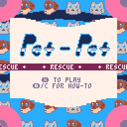

|
Vynth is a video synthesizer made with p5.js and WebGL. Intended to make the daunting technical difficulty of shader art more accesible to creative people. Patches created in the visual programming interface are compiled to GLSL fragment shaders. Technologies: p5.js, WebGL, HTML, CSS |
|
Aesthetic creations made with code. Several examples on my instagram page. Technologies: p5.js, Processing, three.js |
|  |
Pet-Pet Rescue is a tiny 8-bit game where the player saves pets as they fall from the sky to their would-be doom in the ocean below. Technologies: Pico-8, Lua |
|
Bloink is a game where the player makes generative musical compositions by placing different physics objects in the world. Those objects interact to make rythmic and melodic material. Technologies: Love2d, Lua |